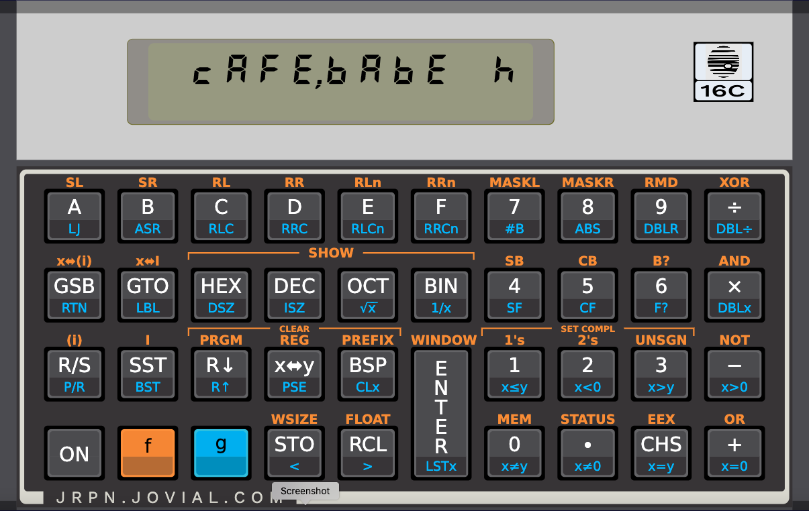

JRPN - Jovial Reverse Polish Notation Calculator

JRPN is calculator simulator inspired by the HP 16-C "Computer Scientist" calculator that came out in 1982. I've tried to make it work the same as a real 16C, and to mimic the appearance as closely as possible. This is a completely clean-room implementation; I didn't have access to any of the calculator's source code. I just read the manual (very closely!), and ask a question or two about how the real thing behaves, and I played around with a couple of other simulators out there.
The User's Guide for this simulator is basically the HP-16C Owner's Handbook, which can be easily found on the web. A couple of little things are different:
Full source is available here. It's built using Google's Flutter, which means it can build it for a large variety of platforms. It's available free of charge; it's a hobby project. Of course, there is no warranty of any kind. For avoidance of doubt:
THE SOFTWARE IS PROVIDED "AS IS", WITHOUT WARRANTY OF ANY KIND, EXPRESS OR IMPLIED, INCLUDING BUT NOT LIMITED TO THE WARRANTIES OF MERCHANTABILITY, FITNESS FOR A PARTICULAR PURPOSE AND NONINFRINGEMENT. IN NO EVENT SHALL THE AUTHORS OR COPYRIGHT HOLDERS BE LIABLE FOR ANY CLAIM, DAMAGES OR OTHER LIABILITY, WHETHER IN AN ACTION OF CONTRACT, TORT OR OTHERWISE, ARISING FROM, OUT OF OR IN CONNECTION WITH THE SOFTWARE OR THE USE OR OTHER DEALINGS IN THE SOFTWARE.
This is, in some sense, a 2.0 version of what I'm now calling "Legacy JRPN", which in turn was an adaptation of Emmet Gray's WRPN calculator.